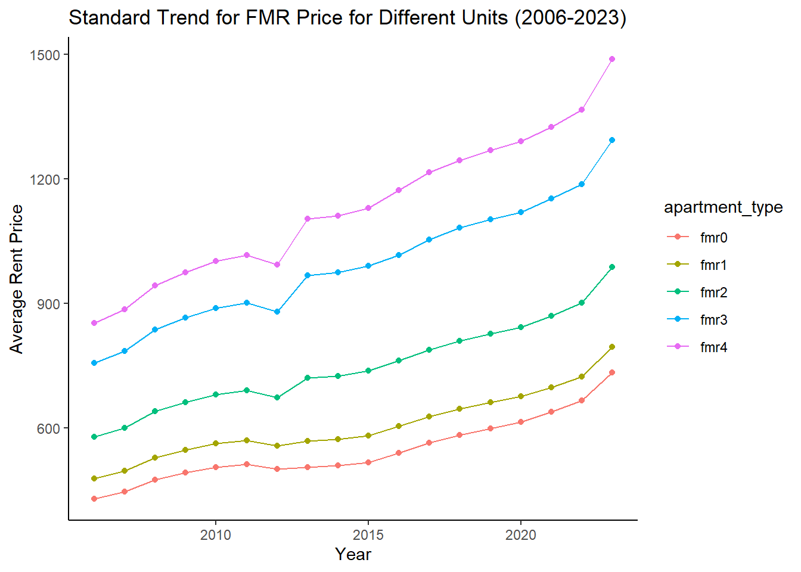

── Conflicts ────────────────────────────────────────── tidyverse_conflicts() ──
✖ dplyr::filter() masks stats::filter()
✖ dplyr::lag() masks stats::lag()
ℹ Use the conflicted package (<http://conflicted.r-lib.org/>) to force all conflicts to become errors
library(janitor)
Attaching package: 'janitor'
The following objects are masked from 'package:stats':
chisq.test, fisher.test
library(broom)
Warning: package 'broom' was built under R version 4.4.3
library(rsample)
Warning: package 'rsample' was built under R version 4.4.3
library(yardstick)
Warning: package 'yardstick' was built under R version 4.4.3
Attaching package: 'yardstick'
The following object is masked from 'package:readr':
spec
# this assures that i am only using counties that were present in all data setsFMR_all <- FMR_all |>filter(!state_alpha %in%c("GU", "PR", "VI"))|>arrange(state_alpha)|>group_by(state_alpha,countyname)|>filter(n() ==18)|>ungroup()FMR_current <- FMR_current |>filter(!state_alpha %in%c("GU", "PR", "VI"))|>arrange(state_alpha)|>group_by(state_alpha,countyname)|>filter(n() ==8)|>ungroup()
Visualizing Data: Trends of FMR Market 2006-2023
Here we want to see the trend of FMR prices over the years. First I want to see the overall trend prices in the united state.
We can see that the average FMR for all units between 0-4 bedroom has almost doubled. Now lets see the trends for each unit type.
FMR_US_trend_sep <- FMR_all |>group_by(Year)|>summarize (fmr0 =mean(fmr0),fmr1 =mean(fmr1),fmr2 =mean(fmr2),fmr3 =mean(fmr3),fmr4 =mean(fmr4))|>pivot_longer(cols =starts_with("fmr"), names_to ="apartment_type", values_to ="average_fmr")all_fmr_trends <-ggplot(FMR_US_trend_sep, aes(x=Year, y =average_fmr, color = apartment_type)) +geom_line() +geom_point() +labs(title ="Standard Trend for FMR Price for Different Units (2006-2023)",x ="Year",y ="Average Rent Price") +theme_classic()ggsave(filename ="images/all_fmr_trends.png", plot = all_fmr_trends)
Saving 7 x 5 in image
print(all_fmr_trends)

We can see over the years there has been a consistent trend showing how the rent prices across the US has increased consistently with one another. Next we want to see how the trends vary when looking at individual regions.
Warning: There was 1 warning in `filter()`.
ℹ In argument: `==...`.
Caused by warning in `state_alpha == c("WA", "OR", "CA", "NV", "UT", "CO", "WY", "MT", "ID", "AK",
"HI")`:
! longer object length is not a multiple of shorter object length
Warning: There was 1 warning in `filter()`.
ℹ In argument: `==...`.
Caused by warning in `state_alpha == c("WV", "DC", "DE", "VA", "KY", "TN", "NC", "SC", "GA", "FL",
"AL", "MS", "AR", "LA", "MD")`:
! longer object length is not a multiple of shorter object length
Total_region_trends <-bind_rows(Overall_southeast_trend,Overall_southwest_trend, Overall_northeast_trend, Overall_midwest_trend, Overall_west_trend)total_region_trend <-ggplot(Total_region_trends, aes(x= Year, y = avg_fmr, color = region)) +geom_line()+geom_point()+labs(title ="Standard Trend for Overall FMR Price for Different Regions (2006-2023)",x ="Year",y ="Average Rent Price") +theme_classic()print(total_region_trend)
#will group by state and get the average of all fmrFMR_state_averages <- FMR_current |>group_by(state_alpha)|>summarise(fmr0 =mean(fmr0),fmr1 =mean(fmr1),fmr2 =mean(fmr2),fmr3 =mean(fmr3),fmr4 =mean(fmr4) )|>arrange(fmr4)|>pivot_longer(cols =starts_with("fmr"), names_to ="apartment_type", values_to ="average_fmr")
State_average_plot <-ggplot(FMR_state_averages, aes(x = state_alpha, y = average_fmr, fill= apartment_type)) +geom_bar(stat ="identity", position ="dodge") +labs(title ="Average Fair Market Rents (FMR) for Different Units by State",x ="State",y ="Average Fair Market Rent (FMR) Value") +theme_classic()+theme(axis.text.x =element_text(angle =90, hjust =1), legend.position ="bottom",legend.direction ="horizontal")ggsave(filename ="images/State_average_plot.png", plot = State_average_plot)
Saving 7 x 5 in image
Now that i got the average rent prices for each unit type per state we can see the the three highest state with the highest fmr were DC (District of Columbia, Hawaii, and California)
What i also want to see is how the 4 main regions play out; Northeast, Southwest, Midwest, and West
Warning: There was 1 warning in `filter()`.
ℹ In argument: `==...`.
Caused by warning in `state_alpha == c("WA", "OR", "CA", "NV", "UT", "CO", "WY", "MT", "ID", "AK",
"HI")`:
! longer object length is not a multiple of shorter object length
Warning: There was 1 warning in `filter()`.
ℹ In argument: `==...`.
Caused by warning in `state_alpha == c("WV", "DC", "DE", "VA", "KY", "TN", "NC", "SC", "GA", "FL",
"AL", "MS", "AR", "LA", "MD")`:
! longer object length is not a multiple of shorter object length
Now i want to compare the value of metropolitan areas to non-metropolitan areas
#will group by state and get the average of all fmrFMR_metro <- FMR_current |>group_by(metro)|>summarise(fmr0 =mean(fmr0),fmr1 =mean(fmr1),fmr2 =mean(fmr2),fmr3 =mean(fmr3),fmr4 =mean(fmr4) )|>arrange(fmr4)|>pivot_longer(cols =starts_with("fmr"), names_to ="apartment_type", values_to ="average_fmr")
metro_average_plot <-ggplot(FMR_metro, aes(x = metro, y = average_fmr, fill= apartment_type)) +geom_bar(stat ="identity", position ="dodge") +labs(title ="Average Fair Market Rents (FMR) for Different Units by State",x ="Metropolitan Status",y ="Average Fair Market Rent (FMR) Value") +theme_classic()+theme(axis.text.x =element_text(hjust =1))print(metro_average_plot)
fmr_lm0 <-lm( fmr0 ~ Year + metro + state_alpha + fmr1, data = model_train )fmr_lm1 <-lm( fmr1 ~ Year + metro + state_alpha + fmr0+ fmr2, data = model_train )fmr_lm2 <-lm( fmr2 ~ Year + metro + state_alpha + fmr1+fmr3, data = model_train )fmr_lm3 <-lm( fmr3 ~ Year + metro + state_alpha + fmr2+fmr4, data = model_train )fmr_lm4 <-lm( fmr4 ~ Year + metro + state_alpha + fmr3, data = model_train )
lm0_plot <-ggplot(data = model_pred0, mapping =aes(y = .fitted, x = fmr0)) +geom_point(alpha =0.25) +geom_smooth(method ="loess", se =FALSE, linewidth =1.5)+labs(title ="Linear Regression Model for Zero Room Unit",x ="Actual FMR Value for Zero Room Unit",y ="Predicted FMR Value for Zero Room Unit" )+theme_classic()lm1_plot <-ggplot(data = model_pred1, mapping =aes(y = .fitted, x = fmr1)) +geom_point(alpha =0.25) +geom_smooth(method ="loess", se =FALSE, linewidth =1.5)+labs(title ="Linear Regression Model for One Room Unit",x ="Actual FMR Value for One Room Unit",y ="Predicted FMR Value for One Room Unit" )+theme_classic()lm2_plot <-ggplot(data = model_pred2, mapping =aes(y = .fitted, x = fmr2)) +geom_point(alpha =0.25) +geom_smooth(method ="loess", se =FALSE, linewidth =1.5)+labs(title ="Linear Regression Model for Two Room Unit",x ="Actual FMR Value for Two Room Unit",y ="Predicted FMR Value for Two Room Unit" )+theme_classic()lm3_plot <-ggplot(data = model_pred3, mapping =aes(y = .fitted, x = fmr3)) +geom_point(alpha =0.25) +geom_smooth(method ="loess", se =FALSE, linewidth =1.5)+labs(title ="Linear Regression Model for Three Room Unit",x ="Actual FMR Value for Three Room Unit",y ="Predicted FMR Value for Three Room Unit" )+theme_classic()lm4_plot <-ggplot(data = model_pred4, mapping =aes(y = .fitted, x = fmr4)) +geom_point(alpha =0.25) +geom_smooth(method ="loess", se =FALSE, linewidth =1.5)+labs(title ="Linear Regression Model for Four Room Unit",x ="Actual FMR Value for Four Room Unit",y ="Predicted FMR Value for Four Room Unit" )+theme_classic()print(lm0_plot)